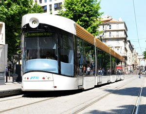

The United States could reduce non-transportation energy consumption by 23 percent by 2020 by adopting energy efficiency technologies, according to a recent research report from McKinsey & Company.
The report notes that an estimated $520 billion up-front investment (not including program costs) would eliminate more than $1.2 trillion in wasteful energy use, while also providing a large-scale abatement of greenhouse gas emissions. The report also notes the significant barriers to energy efficiency gains, including the need for significant up-front spending in exchange for long-term benefits; the fragmented nature of such efforts that keep it from being a priority, because there are more than 100 million locations and billions of devices in residential, commercial and industrial settings, and the difficulty in tracking and verifying energy that is not consumed.
To overcome those barriers, the McKinsey report calls for an overarching national strategy that will recognize energy efficiency as “an important energy resource”; launch a wide array of both proven and emerging approaches to efficiency; identify methods of providing significant up-front funding for investments in energy efficiency; forge stronger bonds among utilities, regulators, government agencies, industries and energy users; and foster innovation in the next wave of energy efficiency technologies. The potential energy savings could avoid 1.1 billion tons of greenhouse gas emissions, according to the report.
But what about energy use in transportation? “Moving Cooler: An Analysis of Transportation Strategies for Reducing Greenhouse Gas Emissions,” released in July, concluded that the United States could cut greenhouse gas emissions from transportation to 24 percent below projected “baseline” levels by 2050.
The findings, presented by the Urban Land Institute and sponsored by a number of federal agencies and other groups, determined that a wide range of approaches are needed to cut greenhouse gas emissions in transportation. These include changes to current transportation systems and operations, travel behavior, land use patterns, and public policies and regulations. The report found the biggest reductions through local and regional regulations that increase the cost of driving alone, regulations that reduce and enforce speed limits, “smart growth” strategies that reduce travel distances, and multimodal strategies that expand the options for travel, such as mass transit systems.
|
 FLICKR/DIEGO CUPOLO According to a recent report from McKinsey & Company, the biggest reductions to greenhouse gas emissions from transportation come from local and regional initiatives such as developing mass transit systems. |
|
|